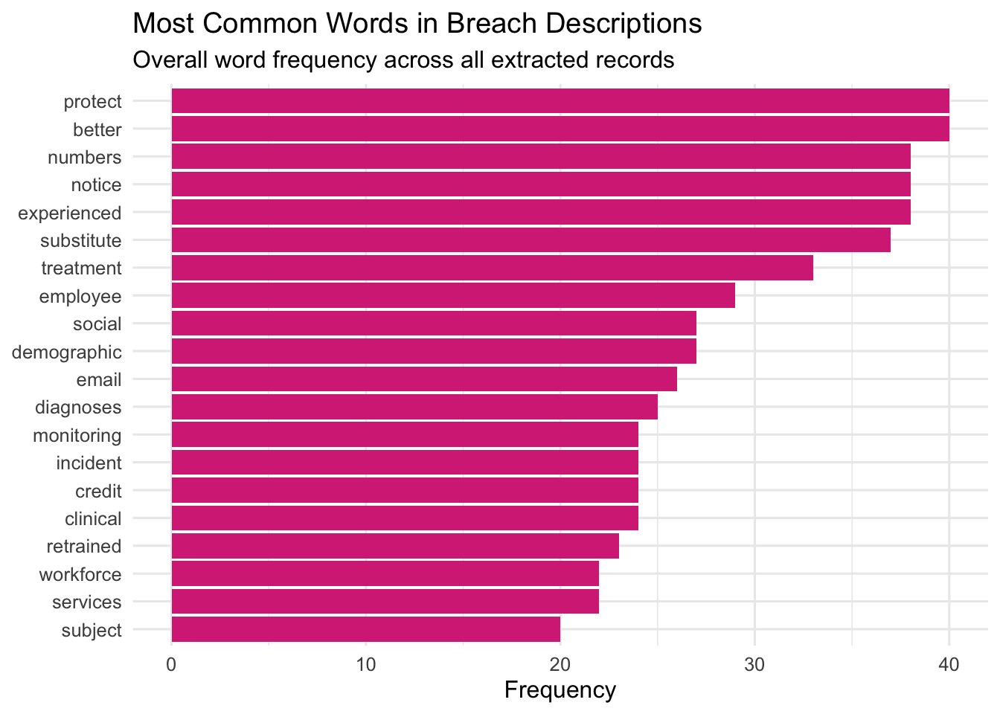
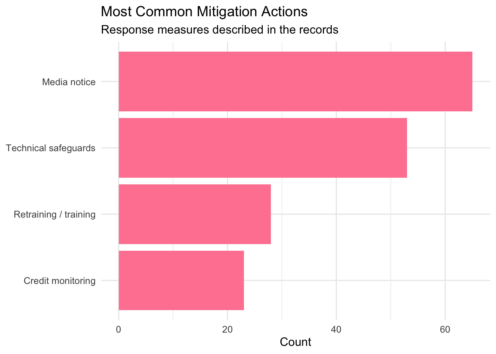
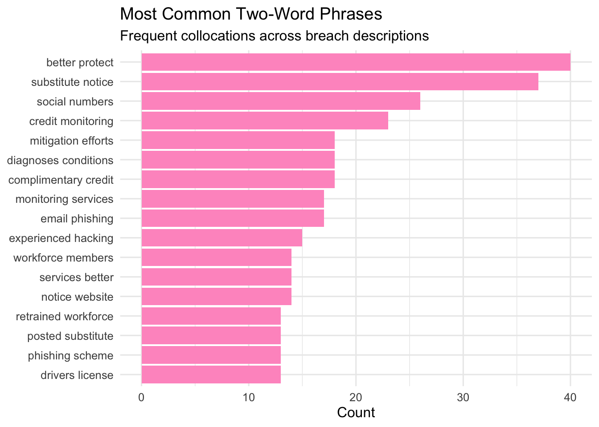

library(tidyverse)
library(pdftools)
library(quanteda)
library(quanteda.textstats)
library(quanteda.textplots)
library(stringr)
library(scales)
library(RColorBrewer)Cyber Insurance Research
1 Overview
This project for my senior capstone analyzes a PDF collection of breach descriptions as a text corpus. The goal is to identify the most common claim language, incident types, PHI categories, and mitigation actions mentioned across the records.
The workflow follows a text-mining structure that moves from raw text to a corpus, then to tokens, and then to a document-feature matrix for visual analysis. This makes it possible to compare repeated language patterns across breach descriptions.
2 Data and Workflow
The analysis proceeds in six steps:
- Read the PDF into R.
- Split the combined text into individual breach records.
- Create simple metadata from the text, such as incident type and number of affected individuals.
- Build a quanteda corpus and document-feature matrix.
- Generate visualizations for word frequency, incident patterns, PHI categories, and common phrases.
- Save a clean extracted dataset for future use.
3 Software and References
This project used the following tools and references:
4 Load Packages
This section loads the R packages used for text extraction, cleaning, corpus construction, and plotting.
5 Read the PDF
This section reads the PDF into R and combines all pages into one text object.
pdf_file <- "WebDescription - Copy.pdf"
pdf_pages <- pdf_text(pdf_file)
full_text <- paste(pdf_pages, collapse = "\n")
cat("Pages loaded:", length(pdf_pages), "\n")Pages loaded: 1 cat("Characters loaded:", nchar(full_text), "\n")Characters loaded: 50093 6 Split the PDF into Individual Records
Each breach description is treated as its own document. This makes the dataset easier to analyze because each row becomes one claim record.
full_text_clean <- full_text %>%
str_replace_all("\\r", " ") %>%
str_replace_all("\\n+", " ") %>%
str_replace_all("\\s+", " ") %>%
str_trim()
marked_text <- full_text_clean %>%
str_replace_all("(?=The covered entity \\(CE\\))", "|||REC|||") %>%
str_replace_all("(?=The business associate \\(BA\\))", "|||REC|||") %>%
str_replace_all("(?=[A-Z][A-Za-z&'.,\\- ]+, the covered entity \\(CE\\))", "|||REC|||") %>%
str_replace_all("(?=[A-Z][A-Za-z&'.,\\- ]+, the business associate \\(BA\\))", "|||REC|||")
records <- marked_text %>%
str_split("\\|\\|\\|REC\\|\\|\\|", simplify = FALSE) %>%
.[[1]] %>%
str_trim()
records <- records[records != ""]
records <- records[str_detect(records, "reported that")]
claims <- tibble(
doc_id = paste0("claim_", seq_along(records)),
text = records
)
cat("Extracted", nrow(claims), "records\n")Extracted 89 records7 Create Simple Metadata
This section creates basic variables directly from the text. These variables help summarize the kinds of incidents and the level of impact described in the records.
claims <- claims %>%
mutate(
incident_type = case_when(
str_detect(str_to_lower(text), "ransomware") ~ "Ransomware",
str_detect(str_to_lower(text), "phishing") ~ "Phishing",
str_detect(str_to_lower(text), "wrong recipient|wrong recipients") ~ "Wrong recipient",
str_detect(str_to_lower(text), "hacking incident") ~ "Hacking",
str_detect(str_to_lower(text), "cybersecurity incident") ~ "Cybersecurity incident",
str_detect(str_to_lower(text), "cyber-attack|cyberattack") ~ "Cyberattack",
str_detect(str_to_lower(text), "viewable over the internet") ~ "Internet exposure",
str_detect(str_to_lower(text), "lost during transport|mailed") ~ "Mailing / transport",
TRUE ~ "Other"
),
affected_raw = str_extract(text, "\\d{1,3}(?:,\\d{3})*\\s+individuals"),
affected_individuals = str_extract(affected_raw, "\\d{1,3}(?:,\\d{3})*"),
affected_individuals = as.numeric(str_replace_all(affected_individuals, ",", "")),
credit_monitoring = if_else(str_detect(str_to_lower(text), "credit monitoring"), 1, 0),
retraining = if_else(str_detect(str_to_lower(text), "retrained|retraining|training"), 1, 0),
technical_safeguards = if_else(
str_detect(str_to_lower(text), "technical safeguards|security safeguards|access controls|encryption"),
1, 0
),
media_notice = if_else(str_detect(str_to_lower(text), "the media|media\\b"), 1, 0)
)
table(claims$incident_type)
Cyberattack Cybersecurity incident Hacking
14 6 8
Mailing / transport Other Phishing
2 20 17
Ransomware Wrong recipient
12 10 8 Build the Corpus and Document-Feature Matrix
This is the main text-mining setup step. The text is converted into a quanteda corpus, tokenized, cleaned, and transformed into a document-feature matrix.
corp_claims <- corpus(claims, text_field = "text")
toks <- tokens(
corp_claims,
remove_punct = TRUE,
remove_numbers = TRUE,
remove_symbols = TRUE,
remove_url = TRUE
) %>%
tokens_tolower() %>%
tokens_remove(stopwords("english")) %>%
tokens_remove(c(
"ce", "ba", "phi", "hhs", "ocr", "reported", "affected", "individuals",
"information", "protected", "health", "involved", "included", "entity",
"covered", "business", "associate", "breach", "response", "provided",
"implemented", "additional", "notified", "technical", "administrative",
"security", "safeguards", "media", "names", "addresses", "dates", "birth"
))
dfmat <- dfm(toks)
dfmat <- dfm_trim(dfmat, min_termfreq = 3, min_docfreq = 2)
cat("DFM:", ndoc(dfmat), "documents,", nfeat(dfmat), "features\n")DFM: 89 documents, 94 features9 Graph 1: Most Common Words
This graph shows the terms that appear most often across all extracted breach descriptions. It provides a broad overview of the dominant language in the dataset.
topfeat <- topfeatures(dfmat, 20)
top_words <- tibble(
term = names(topfeat),
count = as.numeric(topfeat)
)
ggplot(top_words, aes(x = reorder(term, count), y = count)) +
geom_col(fill = "#d63384") +
coord_flip() +
labs(
title = "Most Common Words in Breach Descriptions",
subtitle = "Overall word frequency across all extracted records",
x = NULL,
y = "Frequency"
) +
theme_minimal(base_size = 12)
10 Graph 2: Incident Type Distribution
This graph shows how often each type of breach incident appears in the extracted records. It helps identify which incident types are most common in the corpus.
claims %>%
count(incident_type, sort = TRUE) %>%
ggplot(aes(x = reorder(incident_type, n), y = n)) +
geom_col(fill = "#e83e8c") +
coord_flip() +
labs(
title = "Incident Types in Breach Descriptions",
subtitle = "Frequency of broad incident categories",
x = NULL,
y = "Count"
) +
theme_minimal(base_size = 12)
11 Graph 3: Total Affected Individuals by Incident Type
This graph moves from record counts to impact. It shows which incident types account for the largest total number of affected individuals.
claims %>%
group_by(incident_type) %>%
summarise(total_affected = sum(affected_individuals, na.rm = TRUE), .groups = "drop") %>%
arrange(desc(total_affected)) %>%
ggplot(aes(x = reorder(incident_type, total_affected), y = total_affected)) +
geom_col(fill = "#f06595") +
coord_flip() +
scale_y_continuous(labels = comma) +
labs(
title = "Total Affected Individuals by Incident Type",
subtitle = "Aggregate impact of each incident category",
x = NULL,
y = "Total affected individuals"
) +
theme_minimal(base_size = 12)
12 Graph 4: Mitigation Actions Mentioned
This graph summarizes the response actions described in the breach narratives. It shows which mitigation steps appear most often after an incident.
claims %>%
summarise(
`Credit monitoring` = sum(credit_monitoring, na.rm = TRUE),
`Retraining / training` = sum(retraining, na.rm = TRUE),
`Technical safeguards` = sum(technical_safeguards, na.rm = TRUE),
`Media notice` = sum(media_notice, na.rm = TRUE)
) %>%
pivot_longer(cols = everything(), names_to = "action", values_to = "count") %>%
ggplot(aes(x = reorder(action, count), y = count)) +
geom_col(fill = "#ff85a1") +
coord_flip() +
labs(
title = "Most Common Mitigation Actions",
subtitle = "Response measures described in the records",
x = NULL,
y = "Count"
) +
theme_minimal(base_size = 12)
13 Graph 5: Most Frequently Mentioned PHI Categories
This graph focuses on the types of protected health information mentioned in the breach descriptions. It highlights which data categories appear most often in the text.
phi_terms <- c(
"social security",
"drivers license",
"dates of birth",
"claims information",
"financial information",
"medications",
"diagnoses",
"lab results",
"health insurance",
"clinical information",
"demographic information",
"treatment information",
"email addresses"
)
phi_counts <- tibble(term = phi_terms) %>%
mutate(
count = map_int(term, ~ sum(str_detect(str_to_lower(claims$text), fixed(.x, ignore_case = TRUE))))
) %>%
arrange(desc(count))
ggplot(phi_counts, aes(x = reorder(term, count), y = count)) +
geom_col(fill = "#c9184a") +
coord_flip() +
labs(
title = "Most Frequently Mentioned PHI Categories",
subtitle = "Specific data types referenced in the breach records",
x = NULL,
y = "Count"
) +
theme_minimal(base_size = 12)
14 Graph 6: Most Common Two-Word Phrases
Single words are useful, but repeated phrases can show more specific patterns. This graph identifies the most common two-word collocations in the corpus.
col2 <- textstat_collocations(toks, size = 2, min_count = 3)
top_col2 <- col2 %>%
as_tibble() %>%
slice_max(order_by = count, n = 15)
ggplot(top_col2, aes(x = reorder(collocation, count), y = count)) +
geom_col(fill = "#ff99c8") +
coord_flip() +
labs(
title = "Most Common Two-Word Phrases",
subtitle = "Frequent collocations across breach descriptions",
x = NULL,
y = "Count"
) +
theme_minimal(base_size = 12)
15 Graph 7: Word Cloud
The word cloud offers a quick visual summary of the vocabulary used most often in the corpus. It complements the bar chart by emphasizing overall prominence rather than exact counts.
textplot_wordcloud(
dfmat,
max_words = 75,
color = c("#d63384", "#e83e8c", "#f06595", "#ff85a1", "#ff99c8", "#c9184a")
)16 Save Output
This final step saves the extracted record-level dataset.
write_csv(claims, "claims_extracted_from_pdf.csv")AI Disclaimer: I used ChatGPT as a tutor to clarify instructions, troubleshoot errors, and better understand mistakes encountered during the process. It also assisted with wording and formatting; however, the final submission reflects my own work and judgment.